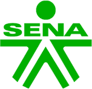

Explora las secciones con un diseño moderno y dinámico. Cada pestaña incorpora video, vista previa y descargas para que consumas el contenido de forma clara, ordenada y agradable.
Sesión No 0: Introducción
¡Bienvenidos al curso sobre la transformación de la gestión del talento humano en esquemas de trabajo
flexible con microsoft 365! exploraremos diferentes modalidades de trabajo haciendo énfasis en
Teletrabajo, Trabajo Hibrido y Trabajo Remoto, cómo el ecosistema de Microsoft 365 opera como un
sistema interconectado, utilizando Microsoft Teams como eje central de este sistema y el frontend
siendo el principal elemento para centralizar la comunicación y las actividades. Veremos el flujo
correcto de la información en el backend, donde SharePoint se consolida como el repositorio oficial
del grupo y OneDrive como el espacio de preparación personal. Además, implementaremos la metodología
Kanban y la llevaremos a Microsoft Planner, organizando el trabajo en tableros visuales para medir
el
avance por entregables y evitar cuellos de botella.
¡Aprovechen al máximo este entorno de aprendizaje!
Sesión 1: Generalidades
En esta sesión veremos la modalidad laboral más adecuada (teletrabajo, trabajo remoto o híbrido) se define mediante una evaluación técnica de las funciones del cargo, considerando aspectos como la necesidad de interacción presencial, la medición por resultados y la disponibilidad tecnológica. Esta asignación se realiza en estricto cumplimiento del marco legal vigente en Colombia, el cual regula de manera independiente el Teletrabajo (Ley 1221 de 2008 y Decreto 1227 de 2022), el Trabajo en Casa como medida excepcional (Ley 2088 de 2021) y el Trabajo Remoto para contratos 100% virtuales (Ley 2121 de 2021), garantizando así la seguridad jurídica, la flexibilidad institucional y los derechos de los colaboradores.
Notion Casos Modalidad CargarSesión 2: Ecosistema office 365 SENA
El ecosistema de Microsoft 365 sirve para unificar herramientas en la nube que optimizan el flujo de información, el almacenamiento institucional en SharePoint y la productividad colaborativa. Por su parte, los equipos en Teams se crean para centralizar la comunicación, coordinar proyectos mediante metodologías ágiles y gestionar el aprendizaje digital en un entorno seguro.
Con el fin de que podamos trabajar de forma más cómoda, escucharnos mejor y avanzar con mayor agilidad en los próximas actividades, vamos a dividirnos en equipos de trabajo. La idea es que cada uno tenga más espacio para aportar sus ideas y que el trabajo sea mucho más dinámico. en el siguiente enlace de "EQUIPOS" les comparto cómo quedarán conformados los grupos y la primera misión que tendremos. ¡A trabajar juntos!
Notion EquiposSesión No 3: Kanban, Rúbrica y Ejercicios
Las metodologías ágiles, derivadas del enfoque Lean enfocado en optimizar el valor, abarcan marcos diversos como Scrum, Kanban, ScrumBan y SAFe para mejorar la eficiencia organizacional. Específicamente, Kanban gestiona el trabajo de manera visual mediante un flujo continuo de tareas en tableros, identificando cuellos de botella para elevar la productividad. Al implementarse en Microsoft Planner, el flujo se estructura transformando los buckets en columnas de progreso y las tareas en tarjetas Kanban con responsables específicos. El avance real de cada actividad se controla a través de checklists internos, comentarios e históricos y archivos adjuntos como evidencias digitales del cumplimiento. Este seguimiento visual, centralizado en canales de Microsoft Teams, facilita una rutina ágil de supervisión basada en entregables en lugar de control de horarios. Finalmente, la calidad en la planeación y la correcta adopción del modelo se miden técnicamente mediante una rúbrica de evaluación institucional.
Notion Fotos y EvidenciasSesión 4: Microsoft Planner
Para gestionar eficazmente el trabajo no presencial, se utiliza Microsoft Planner como herramienta de planificación y seguimiento, permitiendo organizar tareas, asignar responsables, establecer fechas de entrega y registrar evidencias. Integrado con Microsoft 365 y Teams, Planner centraliza el control de actividades, mejora la trazabilidad, fortalece la transparencia del proceso y facilita el cumplimiento de objetivos, incrementando la productividad y la autogestión de los colaboradores. Esta implementación consolida un modelo de gestión basado en resultados mediante tableros visuales (Kanban), lo que optimiza la toma de decisiones en tiempo real, asegura el resguardo de las evidencias digitales bajo los estándares de seguridad de la organización y promueve una cultura de rendición de cuentas adaptada a los entornos laborales virtuales.
Notion EjerciciosSesión No 5: Equipo Teams como LMS
La Utilidad de Teams como LMS (El Punto Medio)
Todo en un solo lugar: Centraliza las clases en vivo, las dudas por chat, los materiales y las calificaciones en una sola pantalla. Se acabó eso de saltar entre el correo, las videollamadas y plataformas externas.
Aprendizaje vivo y colaborativo: A diferencia de los LMS tradicionales que son estáticos (donde solo se descargan archivos), en Teams los aprendices pueden trabajar juntos y en tiempo real sobre documentos de Word, Excel o PowerPoint sin salir de la aplicación.
Un ecosistema con superpoderes: Permite insertar herramientas clave directamente como pestañas: Forms para evaluaciones con calificación automática, OneNote como cuaderno digital y Planner (con su tablero Kanban) para que los estudiantes organicen sus proyectos.
Control e Insights: Ofrece analíticas claras para saber quién está participando realmente, quién se está quedando atrás y cómo va el progreso del grupo, facilitando el seguimiento al instructor.
Competencia para el mundo real: Al aprender en Teams, el estudiante se capacita en la misma herramienta que usará el día de mañana en el mercado laboral híbrido o remoto.
NotionSesión No 6: Ejercicios Aplicados
La implementación de ejercicios prácticos en Microsoft Planner bajo la metodología Kanban optimiza la transición hacia el teletrabajo, trabajo híbrido y trabajo remoto al centralizar el flujo de actividades en tableros visuales altamente intuitivos. Esta estrategia fortalece la transparencia del proceso y la trazabilidad de las evidencias digitales, permitiendo organizar tareas, asignar responsables y establecer fechas de entrega de manera clara. Al sustituir la supervisión presencial tradicional por una medición por resultados en tiempo real, el ecosistema promueve la autogestión, incrementa la productividad institucional y asegura que cada colaborador mantenga una distribución equitativa de sus cargas laborales sin importar su ubicación geográfica.
Final